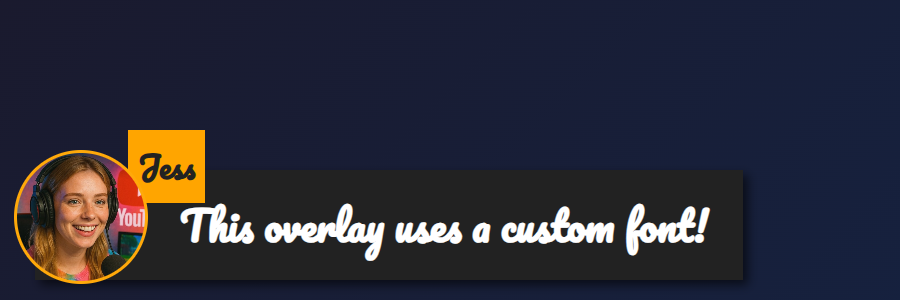

Use your own fonts with dock.html and featured.html, whether you load them in OBS Browser Source, the Chrome extension, or the desktop app.
dock.html or featured.html using URL parameters or OBS custom CSS.
featured.html overlay with &googlefont=Pacifico applied — self-hosted fonts work the same way via @font-face.You need a direct HTTPS link to the font file. Pick a host that allows hotlinking/CORS so the browser inside OBS or the app can fetch it.
Define the font with @font-face and point it at your hosted file, then set the overlay to use it via --font-family.
@font-face {
font-family: 'MyDockFont';
src: url('https://your-site.example/fonts/MyDockFont.woff2') format('woff2');
font-style: normal;
font-weight: 400;
}
/* Optional second weight */
@font-face {
font-family: 'MyDockFont';
src: url('https://your-site.example/fonts/MyDockFont-Bold.woff2') format('woff2');
font-style: normal;
font-weight: 700;
}
:root {
--font-family: 'MyDockFont', 'Segoe UI', 'Arial Unicode MS', sans-serif;
--comment-font-size: 28px;
--author-font-size: 24px;
--message-line-height: 32px;
}
Need multiple fonts (for Armenian + Russian + Latin)? Declare each font-face and list them in --font-family like 'FontA', 'FontB', 'FontC', sans-serif. The browser will fall back automatically if a glyph is missing.
&css=https://your-site.example/my-font.css to the page URL:
https://socialstream.ninja/dock.html?session=YOURSESSION&css=https://your-site.example/my-font.css https://socialstream.ninja/featured.html?session=YOURSESSION&css=https://your-site.example/my-font.css
&css= or base64 encode it with &b64css= (both pages support these).&font=YourInstalledFont uses a system font name, while &googlefont=Noto+Sans+Armenian,Noto+Sans loads Google Fonts if you prefer not to self-host.These options work the same in the Chrome extension, Electron app, and the hosted site because they all load the same dock.html/featured.html files.
Core typography variables used by both pages:
:root {
--font-family: 'MyDockFont', 'FontB', sans-serif;
--comment-font-size: 28px; /* message text size */
--author-font-size: 24px; /* name text size */
--comment-font-weight: 600; /* featured.html */
--author-font-weight: 700; /* featured.html */
--message-font-weight: 500; /* dock.html */
--name-font-weight: 700; /* dock.html */
--comment-color: #ffffff;
--author-color: #ffe08a;
--comment-bg-color: #161616;
--author-bg-color: #202020;
}
Dock-only extras: --stylized-emoji, --stylized-img, --text-stroke-width, --text-shadow, and row colors (--highlight-base, --highlight-base2, plus the compact variants).
Featured layout tweaks: adjust --comment-width, --comment-padding, --comment-area-bottom, and --comment-area-height to reposition the lower-third block without editing the HTML.
Pair CSS changes with existing URL options like &scale, &compact, or &hidesource when you need layout adjustments in the dock.
https://socialstream.ninja/fonts.html to confirm a system font is visible when testing &font=.@font-face blocks and --font-family; mismatches are the most common issue.